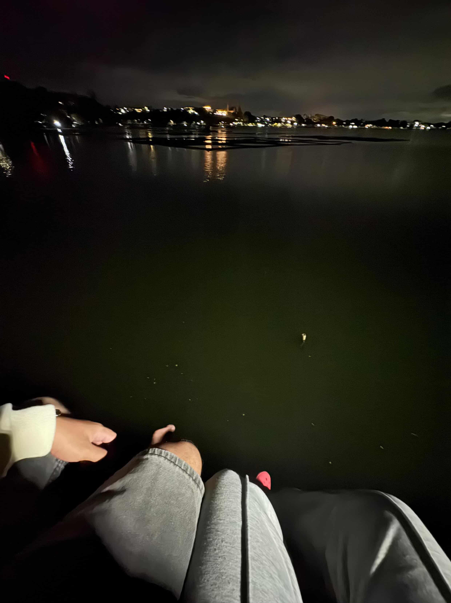

a voicemail i never sent
— things i still carry —
📼 press to listen
Hey… I’ve been thinking about this for a while now. Not in a dramatic way, but sometimes memories come back when everything is quiet. What felt strange about us was how normal it became to lose each other, then find our way back again.
Even when you were gone, I still believed you’d come back eventually — and you always did. That’s probably why I never fully learned to let go. Every return felt familiar, like nothing changed.
The calls, the conversations, even the silence felt real. Especially those late nights where we stayed on call until one of us fell asleep. I’d just stay there quietly, listening. And maybe that’s where I got attached — the small, quiet moments that felt real without us noticing.
What I miss the most are the small things. The “kumain ka na ba?”, the random updates, the photos for no reason. Our long calls until 4 or 5AM, just existing together in silence sometimes. It felt simple, but it became part of my routine.
Now that it’s gone, everything feels quieter. It wasn’t one big goodbye — it was everything slowly stopping. Even now, I still find myself looking for those moments out of habit.
I think I don’t just miss “us,” I miss the feeling of someone always being there. And when that disappears, it’s not easy to replace.
I still think about that roadtrip. Everything felt effortless — no pressure, no labels, just us. The laughs, the silence, the closeness… it all felt natural.
Then Sampaloc Lake at 2AM — quiet, cold, almost empty. We just sat there beside each other. No need for words. I remember thinking how unreal it felt, not because of the place, but because you were there.
After everything, you were still beside me. For a moment, everything felt calm, like maybe it would finally last. But now it feels like it happened to different versions of us.
One of the hardest parts was how normal everything felt when we were together. Sitting beside each other but still chatting, me playing with your hair, you asking for hotspot — those small habits became our routine. I didn’t realize how much I got used to it until it was gone.
Even seeing you became different later on. That’s why when there were no classes, part of me felt relieved — I wasn’t sure I could handle seeing you every day knowing things had changed.
Still, I’m thankful for those days. I hope life is being gentle with you, and I hope the things you quietly want for yourself are slowly happening.

I think the hardest part is acceptance — that we were once so close, and now we’re not. I’m not angry, and I hope you aren’t either. Everything I said here is still real for me, but I don’t want it to end with bitterness. I’d rather it stay calm.
If you ever read the letters I wrote for you, I hope you understand it’s my way of properly saying goodbye. And even if you don’t, that’s okay too. I just needed to say it.
I hope you’re okay, growing, and at peace. As for us, maybe we’re just memories now — and I think I’m okay with that, because it meant something real.
if you ever hear this —
just know that you we're indeed a good dream, bestie.